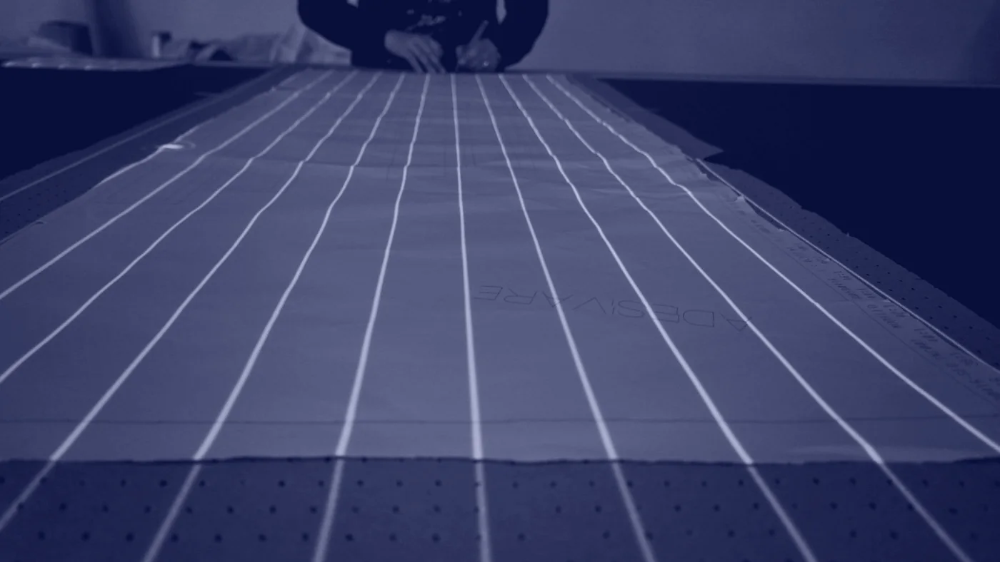
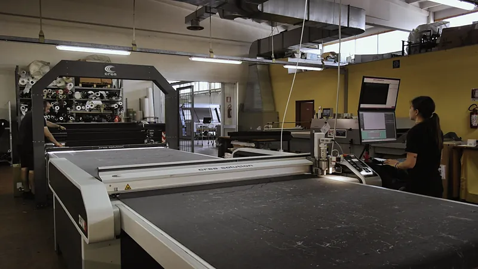

Devid® Taglio tessuti e modellisticasrl
Vezzano sul Crostolo, Reggio Emilia
Dagli anni ’50
Sessant’anni di esperienza

Servizi
(5)
-
Controllo tessuti
Ogni pezza verificata alla specula, misurata senza tensione e segnalata fallo per fallo.

-
Adesivazione
Adesivazione, accoppiatura e decatizzo con la strumentazione nuova del reparto.

-
Modellistica CAD-CAM
Sviluppo taglie, digitalizzazione dei cartamodelli e piazzamento automatico.

-
Taglio computerizzato
Dai tessuti leggeri agli spalmati, fino a 7 cm di materasso, anche con l’intelligenza artificiale.

-
Confezione campioni
Capi campionario e di produzione, cuciti da operatrici con esperienza decennale.

Come lavoriamo
L’esperienza dell’artigianato italiano unita alla ricerca e alle macchine più moderne. Generazioni di lavoro sartoriale e un aggiornamento continuo, per un tagliato preciso al millimetro e capi che escono come devono.

Controlliamo il tessuto acquistato dal cliente, sviluppiamo i modelli al computer per consumarne il meno possibile, lo tagliamo in automatico e confezioniamo i campioni. Tutto a Vezzano sul Crostolo, senza viaggi fra un fornitore e l’altro.
Azienda Dove siamoTaglio con l’intelligenza artificiale
Il taglio del futuro
è già presente.
-
Scansione
Il portale legge tutta la pezza: allover, immagini, stampa digitale, loghi e motivi ripetuti.
-
Piazzamento
I pezzi si incastrano sul tessuto per consumarne il meno possibile, anche da file DXF di qualsiasi CAD-CAM.
-
Taglio
Automatico e senza tensioni, fino a 7 cm di materasso.
Con Crea Solution, partner di Devid
Dentro il laboratorio
Vezzano sul Crostolo


Il parco macchine
(6)
-
7cm
di materasso con l’Investronica Diamond
-
5cm
di materasso con il Morgan Next 2
-
200cm
di altezza utile del plotter Algotex Stream 180
-
1m
di diametro dei rotoli al banco di controllo
-
2
stenditori elettronici, Oteman e Bkr, con conveyor
-
20s
al massimo di prova vapore col metodo Hoffman
Per chi tagliamo
- Moda e lusso
- Automotive
- Arredamento
- Modellistica
- Sanitario
Ultime novità
(2)